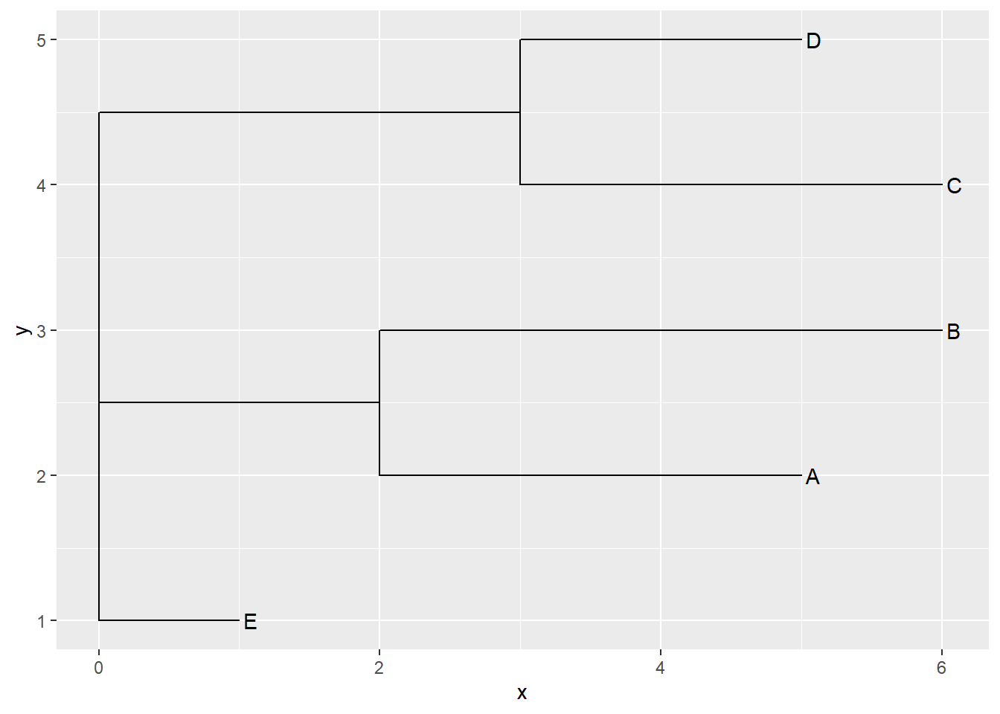
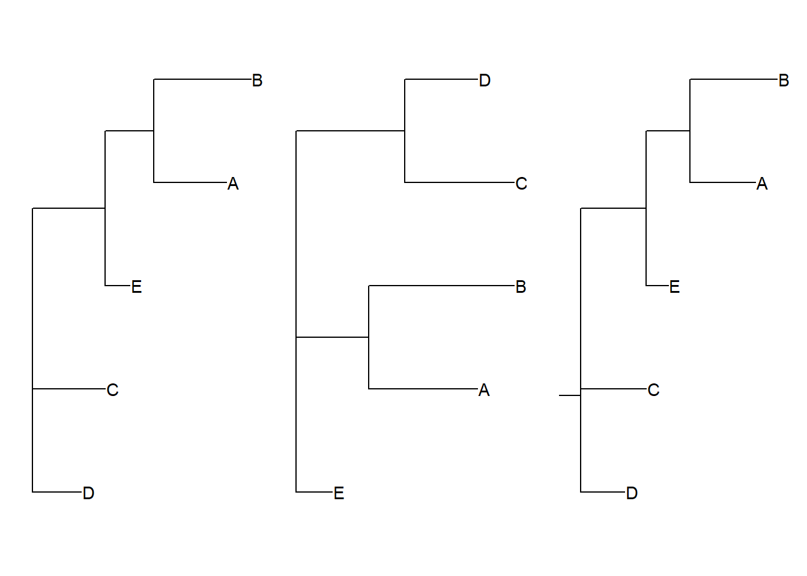
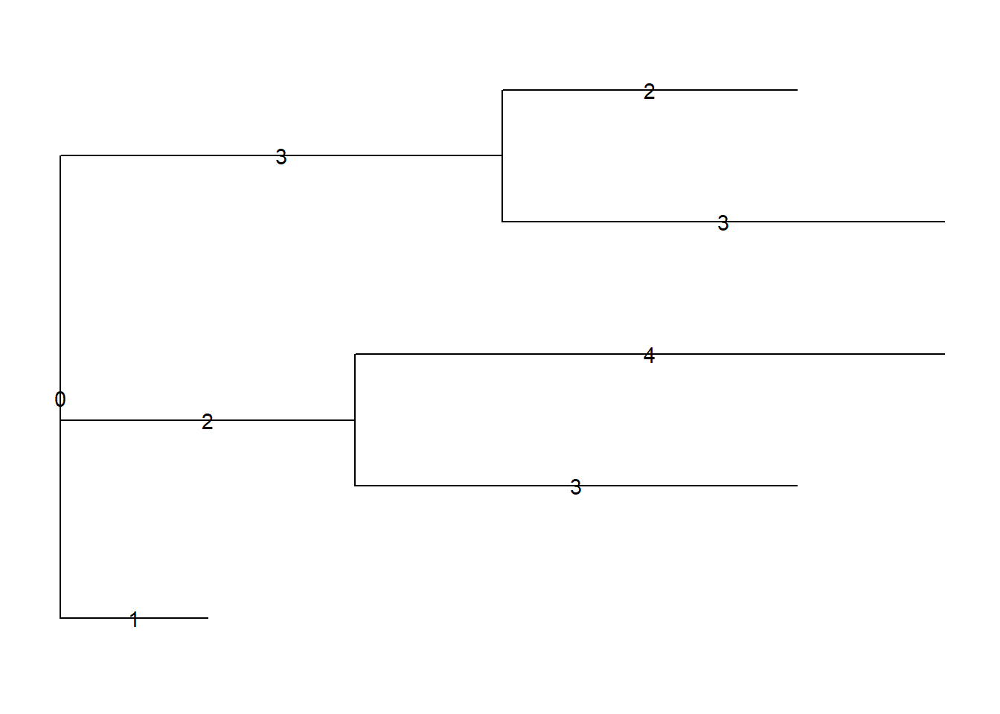
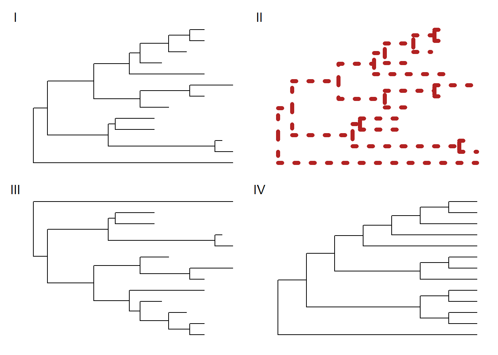
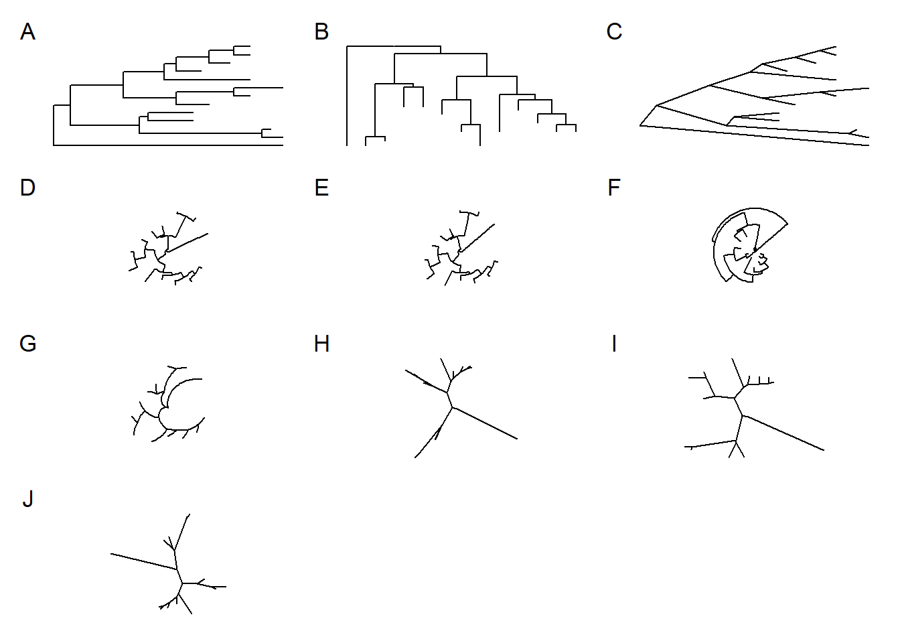
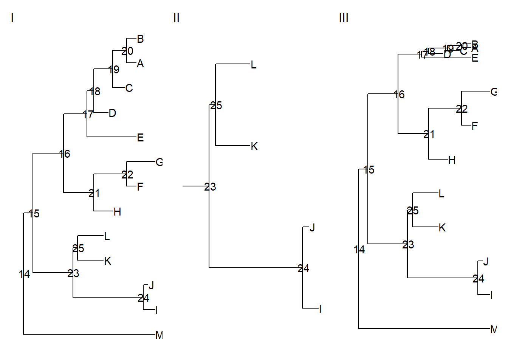
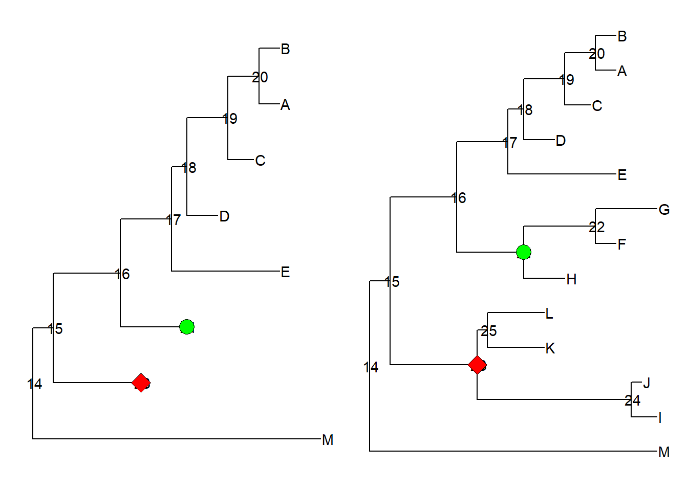
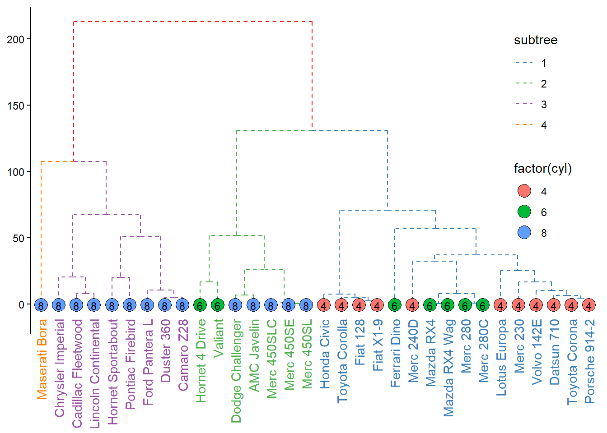
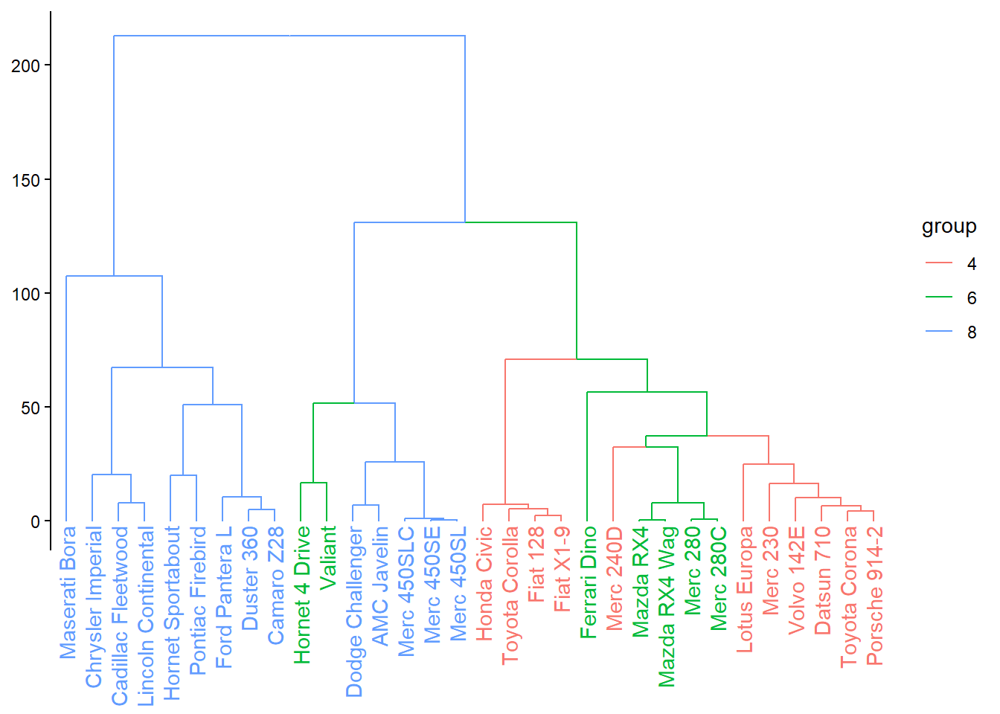

ggtree
26 Aug 2020
2282 Words|Read in about 5 Min|本文总阅读量次
Data Integration, Manipulation and Visualization of Phylogenetic Trees
newick
MEGA支持以三种不同的格式导出树：Newick，tabular和Nexus。其中newick可以直接使用read.tree读取。 其中不管什么软件，都极为常用。自己尝试着写newick格式画树。
new <- "((A:3.0,B:4.0):2.0,(C:3.0,D:2.0):3.0,E:1.0);"
tree <- read.tree(text = new)
ggtree(tree)+geom_tiplab() 这样写的话我们会有两个值，tiplab跟edge.legnth
这样写的话我们会有两个值，tiplab跟edge.legnth

p1 <- ggtree(read.tree(text = "(B,(A,D),C);"))
p2 <- ggtree(read.tree(text = "(A,(B,C),D);"))
p3 <- ggtree(read.tree(text = "((A,D),(C,B));"))+theme_tree2()
p1+p2+p3

上面即添加了AD->BC的节点（node）信息。这个节点信息一般会储存bootstrap值。
让我们再看看root
rooted <- ape::root(tree,outgroup = which(tree$tip.label == "D"))
ape:::.write.tree2(rooted,check_tips = T)## [1] "((((A:3,B:4):2,E:1):3,C:3):0,D:2);"p1 <- ggtree(rooted)+geom_tiplab()
p2 <- ggtree(tree) + geom_tiplab()
tree_root <- read.tree(text='((((A:3,B:4):2,E:1):3,C:3):0,D:2):1;')
p3 <- ggtree(tree_root) + geom_tiplab() + geom_rootedge()
p1+p2 +p3 D移动到了最下面,这实际上就是有根了，当然也可以展示那种没有标签的，比如p3就是p2上修改罢了，加一个没有标签的根，但是这只是展示的方式而已（方便直观地从根开始看而已）（我觉得真正的有根树应该是在确定序列确定根后，使用那条根去计算距离等不是才对吗？）。
看过newick格式的各种画树，我们再看看树数据转tibble长什么样
可以看到两个的不同。这就是为什么可以使用ggplot() + geom_tree(aes(x,y))的原因的，

这样就可以将分枝长度绘制出来了。0嘛就是
## [1] "((A:3,B:4):2,(C:3,D:2):3,E:1);"应该就是newick无根无值，ggtree自动补零,自动加根？
树的可视化以及数据注释
nwk <- system.file("extdata", "sample.nwk", package="treeio")
tree <- read.tree(nwk)
ape:::.write.tree2(tree,check_tips = T)## [1] "(((((((A:4,B:4):6,C:5):8,D:6):3,E:21):10,((F:4,G:12):14,H:8):13):13,((I:5,J:2):30,(K:11,L:11):2):17):4,M:56);"p1 <- ggtree(tree)
p2 <- ggtree(tree, color="firebrick", size=2, linetype="dotted")
p3 <- ggtree(tree,ladderize = F)
p4 <- ggtree(tree,branch.length = "none")
p1+p2+p3+p4+plot_annotation(tag_levels = "I")
ladderize不以梯形呈现树，branch.length可以只展示树的拓扑结构。
layouts <- c('rectangular', 'dendrogram', 'slanted', 'fan', 'circular', 'inward_circular', 'radial', 'equal_angle', 'daylight','ape')
plots <- map(layouts,~ggtree(tr = tree,layout = .x))## Scale for 'y' is already present. Adding another scale for 'y', which will
## replace the existing scale.## Average angle change [1] 0.161786714463209## Average angle change [2] 0.050721258810625## Average angle change [3] 0.0238174251191971
更具体的看http://yulab-smu.top/treedata-book/chapter4.html
查看选定的树枝及缩放选定树枝
我觉得有时候这是有必要的。
p1 <- ggtree(tree) + geom_tiplab() + geom_nodelab(aes(label = node))
p2 <- viewClade(p1, MRCA(p1, "I", "L"))
p3 <- scaleClade(p1, node=17, scale=.1)
p1+p2 +p3 + plot_annotation(tag_levels = "I")
折叠与展开
p4 <- p1 %>% collapse(node=21) +
geom_point2(aes(subset=(node==21)), shape=21, size=5, fill='green')
p5 <- collapse(p4, node=23) +
geom_point2(aes(subset=(node==23)), shape=23, size=5, fill='red')
p6 <- ggtree::expand(p5, node=23) %>% ggtree::expand(node=21)
p5+p6
open_tree和rotate_tree就不展示了。
## Warning: The `x` argument of `as_tibble.matrix()` must have unique column names if `.name_repair` is omitted as of tibble 2.0.0.
## Using compatibility `.name_repair`.
## This warning is displayed once every 8 hours.
## Call `lifecycle::last_warnings()` to see where this warning was generated.这是ggtree所有导出的函数。
我觉得有个函数很重要%<+%
这函数源码为
## function (pg, data)
## {
## if (!is.data.frame(data)) {
## stop("input should be a data.frame...")
## }
## pg %add% data
## }
## <bytecode: 0x0000000019ee81b8>
## <environment: namespace:ggtree>## function (p, data)
## {
## p$data <- p$data %add2% data
## return(p)
## }
## <bytecode: 0x0000000019cf3ca0>
## <environment: namespace:ggtree>## function (d1, d2)
## {
## if ("node" %in% colnames(d2)) {
## cn <- colnames(d2)
## ii <- which(cn %in% c("node", cn[!cn %in% colnames(d1)]))
## d2 <- d2[, ii]
## dd <- dplyr::left_join(d1, d2, by = "node")
## }
## else {
## d2[, 1] <- as.character(unlist(d2[, 1]))
## d2 <- dplyr::rename(d2, label = 1)
## dd <- dplyr::left_join(d1, d2, by = "label")
## }
## dd <- dd[match(d1$node, dd$node), ]
## return(dd)
## }
## <bytecode: 0x0000000019b2d038>
## <environment: namespace:ggtree>将left_join函数封装起来了，使得我们可以轻易的在绘图时使用。
这个函数在http://yulab-smu.top/treedata-book/chapter7.html有讲到。
方便我们将绘图数据加入到绘图中
info <- tibble(tip = tree$tip.label,group = cut_interval(seq_along(tree$tip.label),n = 3))
ggtree(tree)%<+%info + geom_tiplab(aes(color = group))
ggtree绘制层次聚类图等
具体的看http://yulab-smu.top/treedata-book/chapter9.html
##
## Call:
## hclust(d = dist(mtcars))
##
## Cluster method : complete
## Distance : euclidean
## Number of objects: 32## 'dendrogram' with 2 branches and 32 members total, at height 425.3447## Mazda RX4 Mazda RX4 Wag Datsun 710 Hornet 4 Drive
## 1 1 1 2
## Hornet Sportabout Valiant Duster 360 Merc 240D
## 3 2 3 1
## Merc 230 Merc 280 Merc 280C Merc 450SE
## 1 1 1 2
## Merc 450SL Merc 450SLC Cadillac Fleetwood Lincoln Continental
## 2 2 3 3
## Chrysler Imperial Fiat 128 Honda Civic Toyota Corolla
## 3 1 1 1
## Toyota Corona Dodge Challenger AMC Javelin Camaro Z28
## 1 2 2 3
## Pontiac Firebird Fiat X1-9 Porsche 914-2 Lotus Europa
## 3 1 1 1
## Ford Pantera L Ferrari Dino Maserati Bora Volvo 142E
## 3 1 4 1g <- split(names(clus), clus)
p <- ggtree(hc, linetype='dashed')
clades <- sapply(g, function(n) MRCA(p, n))
d <- data.frame(label = names(clus),
cyl = mtcars[names(clus), "cyl"])
p <- groupClade(p, clades, group_name='subtree') + aes(color=subtree)
p %<+% d +
layout_dendrogram() +
geom_tippoint(size=5, shape=21, aes(fill=factor(cyl), x=x+.5), color='black') +
geom_tiplab(aes(label=cyl), size=3, hjust=.5, color='black') +
geom_tiplab(angle=90, hjust=1, offset=-10, show.legend=F) +
scale_color_brewer(palette='Set1', breaks=1:4) +
theme_dendrogram(plot.margin=margin(6,6,80,6)) +
theme(legend.position=c(.9, .6)) 其中MRCA返回所输入的tip.label向量的最近的节点,可以直接传入列表。即找到一组节点的祖先节点。 这个代码是treedata-book的代码，基本将层次树图的方方面面都讲到了。既然展示了groupClade，那就再试下groupOut
group <- mtcars %>% rownames_to_column("aa") %>% select(aa,cyl) %>% split(.$cyl)
group <- map(group,~.x[,1])
p <- ggtree(hc)
groupOTU(p,group)+
aes(color = group) +
layout_dendrogram() +
geom_tiplab(angle=90, hjust=1, offset=-1, show.legend=F)+
theme_dendrogram(plot.margin=margin(6,6,80,6))## Warning: `filter_()` is deprecated as of dplyr 0.7.0.
## Please use `filter()` instead.
## See vignette('programming') for more help
## This warning is displayed once every 8 hours.
## Call `lifecycle::last_warnings()` to see where this warning was generated.
进化树注释
- geom_cladelabel 【用于标记进化枝】
- geom_strip 【用于某两个tip间标记】
- geom_hilight 【高亮分支】
- geom_balance 【突出某个节点两个直接后代分支】
- geom_taxalink 【分类单元连结】
- geom_range 【显示置信区间】
text <- "(((((((((A1:0.00012831,A2:0.00010735)0.8130:0.00014485,A3:5.715e-05)0.5010:1.31e-05,A4:0.00022247)0.8490:4.053e-05,A5:9.82e-06)0.9970:0.00017401,(A6:0.00079318,(A7:0.00028724,(A8:0.00011095,A9:5.717e-05)0.6770:8.273e-05)1.0000:0.00041883)1.0000:0.00269228)0.9930:8.471e-05,A10:1.415e-05)0.9940:0.00010982,A11:0.00012538)0.5100:8.467e-05,((A12:1e-07,A13:0)1.0000:6.308e-05,(A14:1.17e-06,(A15:0.00023437,(A16:6.695e-05,A17:0.0001348)0.6060:1.07e-06)0.5940:3.211e-05)1.0000:0.00024049)0.6400:0.00017276)0.9980:8.37e-05,A18:6.729e-05,A19:0);"
tree <- read.tree(text = text)
p1 <- ggtree(tree) + geom_nodelab(aes(label = node)) + geom_tiplab()
p2 <- ggtree(tree) + geom_tiplab() +
geom_cladelabel(node = 35,offset = .0001,label = "mg")+
geom_cladelabel(node = 29,align = T,barsize = 3,geom = "label",label = "gg")
p3 <- ggtree(tree) + geom_tiplab() +
geom_strip("A13","A18",label= "13-18",offset.text=0,offset = -0.0035)
p4 <- p2 + geom_hilight(node = 29,fill='darkgreen', type="rect")
p5 <- p4 + geom_balance(node=35, fill='steelblue', color='white', alpha=0.6)
p6 <- ggtree(tree, layout="inward_circular")+ geom_tiplab(hjust = 1)+
geom_taxalink(taxa1='A13', taxa2='A18', color="red", alpha=0.5,
outward=FALSE)
p1+p2+p3+p4+p5+p6 + plot_annotation(tag_levels = "I") +
plot_layout(ncol = 2,heights = c(1,1,1),widths = c(1,1))Figure 1: capthion
ggtree还有拼图，分面图，图像注释这些。其中我很感兴趣的是ggmsa这个多序列拼图。